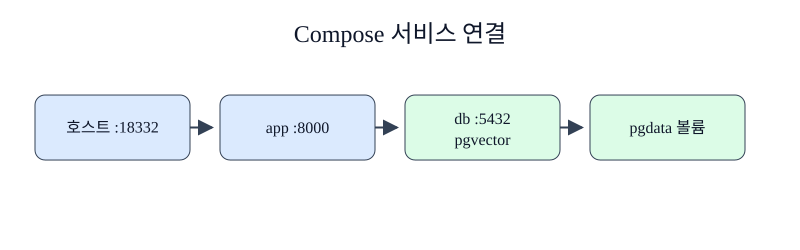

한경 KDT · LLM Agent 개발 & 바이브코딩 · Part 7 · 프로덕션 엔지니어링 · Ch 32 · Docker와 컨테이너
웹 API 하나만 실행해도 실제 서비스는 데이터베이스, 네트워크, 영속 저장소를 함께 사용합니다. 명령을 각각 기억하면 이름과 포트가 서로 어긋날 수 있습니다. Docker Compose는 여러 컨테이너의 구성을 YAML 파일 하나에 적고 하나의 프로젝트로 관리합니다. Ch31의 데이터베이스 운영 개념을 실제 서비스 구성에 연결하는 단계입니다.
Ch31에서는 PostgreSQL, 트랜잭션, 인덱스와 pgvector를 배웁니다. 이 챕터는 Ch31 파일을 복사하지 않고 init.sql에 필요한 최소 스키마를 독립적으로 제공합니다. Ch12에서 사용한 벡터 검색 개념은 vector(3) 열과 HNSW 인덱스로 다시 나타납니다. 3절의 최적화 이미지는 Compose의 app 서비스 빌드 입력이 됩니다.
공연 무대에는 배우뿐 아니라 조명, 음향, 출입 순서가 필요합니다. Compose 서비스(service)는 함께 관리할 컨테이너 하나의 설정입니다. 이 실습에는 app과 db 두 서비스가 있습니다. Compose는 프로젝트 전용 기본 네트워크를 만들고 서비스 이름 db를 내부 호스트 이름으로 제공합니다. app은 호스트의 localhost가 아니라 db:5432로 PostgreSQL에 연결합니다. 이름 있는 볼륨(named volume) pgdata는 DB 컨테이너를 다시 만들어도 데이터를 별도로 보관합니다. depends_on.condition: service_healthy는 DB 프로세스가 생성되었다는 사실을 넘어 pg_isready 검사가 성공할 때까지 app 시작을 기다립니다. 초기 SQL은 vector 확장, 3차원 벡터 열, HNSW 인덱스와 한 행의 예제 데이터를 만듭니다.
Compose는 여러 컨테이너의 이미지, 네트워크, 볼륨, 환경 값을 하나의 YAML에 선언합니다. 서비스 이름 db는 Compose 네트워크 안에서 호스트 이름으로 사용되므로 애플리케이션은 로컬호스트가 아니라 db로 PostgreSQL에 연결합니다. depends_on과 healthcheck 조건은 시작 순서를 돕지만 데이터베이스가 모든 업무 요청을 받을 준비가 됐는지는 애플리케이션 재시도와 readiness로 다시 확인합니다.
docker compose down은 컨테이너를 내리지만 기본적으로 이름 있는 볼륨의 데이터는 남깁니다. --volumes를 붙이면 실습 데이터도 제거됩니다. 개발 환경의 편리한 초기화와 운영 데이터 보존은 요구가 반대이므로 같은 종료 명령을 그대로 사용하지 않습니다.

먼저 docker compose config --format json으로 실제 컨테이너를 만들기 전에 서비스 이름을 검사합니다. 실패 셀은 스택이 없는 상태에서 /ready 연결이 거부되는지 확인합니다. 수정 셀은 up --build --wait로 두 서비스를 만들고 /ready와 /vector-count를 호출합니다. DB 안에서는 pgvector 0.8.6과 course_vectors_embedding_hnsw 인덱스를 직접 조회합니다. 실습 끝에는 down --volumes로 이 챕터 전용 데이터만 제거합니다.
준비된 Python 3.12 노트북에서 첫 셀부터 Shift+Enter로 하나씩 실행합니다. 안내한 결과를 먼저 확인하고 지정한 값 하나를 바꿔 비교합니다. 문서를 사용하는 실습은 파일 묶음이 필요합니다. 노트북과 실습 파일 함께 받기 · 처음 실습하는 방법. 전체 코드 복사에는 아래의 Before/After 셀도 포함됩니다. 이 HTML에서는 코드를 실행하지 않습니다.
Docker Desktop의 실습 전용 이미지와 스택만 사용해 결과를 확인합니다.
이 노트북 전용 Compose 프로젝트의 기존 자원을 먼저 정리합니다.
이 준비 셀은 현재 폴더와 부모 폴더에서 Dockerfile.baseline이 있는 Ch32 실습 폴더를 찾습니다. run(*args, check=True)은 모든 Docker 명령을 그 폴더에서 실행하고 표준 출력·오류와 종료 코드를 CompletedProcess로 반환합니다. 실패 자체를 관찰하는 셀만 check=False를 전달하며, 마지막에는 Docker Engine이 응답하는지 확인합니다.
# Docker 명령을 일정한 폴더에서 실행하고 실패도 결과로 받습니다.
from pathlib import Path
import json, subprocess, time, urllib.request
# 챕터 폴더와 notebooks 폴더 어디에서 시작해도 제공 자료를 찾습니다.
candidates = [parent / "labs/part7/ch32-docker" for parent in (Path.cwd(), *Path.cwd().parents)]
candidates += [Path.cwd(), Path.cwd().parent]
LAB = next(path for path in candidates if (path / "Dockerfile.baseline").is_file())
def run(*args: str, check: bool = True) -> subprocess.CompletedProcess[str]:
return subprocess.run(args, cwd=LAB, text=True, capture_output=True, check=check)
version = run("docker", "version", "--format", "{{.Server.Version}}")
print("Docker Engine", version.stdout.strip())
assert version.stdout.strip()
run("docker", "compose", "-p", "ch32-course-stack", "down", "--volumes", check=False)Docker Engine 29.4.1
CompletedProcess(args=('docker', 'compose', '-p', 'ch32-course-stack', 'down', '--volumes'), returncode=0, stdout='', stderr='time="2026-09-11T11:06:55+09:00" level=warning msg="Warning: No resource found to remove for project \\"ch32-course-stack\\"."\n')Compose 파일을 정규화해 app과 db 서비스가 있는지 확인합니다.
Compose는 여러 컨테이너의 이미지, 네트워크, 볼륨, 환경 값을 하나의 YAML에 선언합니다. 서비스 이름 db는 Compose 네트워크 안에서 호스트 이름으로 사용되므로 애플리케이션은 로컬호스트가 아니라 db로 PostgreSQL에 연결합니다. depends_on과 healthcheck 조건은 시작 순서를 돕지만 데이터베이스가 모든 업무 요청을 받을 준비가 됐는지는 애플리케이션 재시도와 readiness로 다시 확인합니다.
# 컨테이너 생성 전에 구문과 서비스 이름을 검사합니다.
config = run("docker", "compose", "-p", "ch32-course-stack", "config", "--format", "json")
document = json.loads(config.stdout)
print("services", sorted(document["services"]))
assert set(document["services"]) == {"app", "db"}services ['app', 'db']
확인할 점 — 명령의 종료 코드와 실제 출력이 본문의 설명과 같은지 확인합니다. 실습 전용 이름을 사용했으므로 다른 Docker 자원을 변경하지 않습니다.
실제 실행에서 db가 먼저 healthy가 되었고 app도 이어서 healthy가 되었습니다. /ready는 status=ready, /vector-count는 1을 반환했습니다. SQL 조회에서는 pgvector 0.8.6과 기본 키, HNSW 인덱스가 확인됐습니다. 이 구성은 시작 순서를 안정화하지만 실행 중 DB 연결이 끊겼을 때 app이 자동으로 모든 요청을 복구한다는 뜻은 아닙니다. 연결 재시도, 트랜잭션 경계, 마이그레이션 동시 실행은 Ch31의 운영 설계와 함께 결정해야 합니다.
앞의 실행 예제를 실행한 같은 노트북에서 Before 다음 After 순서로 실행합니다. 출력은 실제 실행 결과입니다.
스택이 없을 때 호스트의 API 주소는 연결을 거부합니다.
# 서비스 시작 전 연결 실패를 실제로 확인합니다.
try:
urllib.request.urlopen("http://127.0.0.1:18332/ready", timeout=1)
before = "unexpected success"
except OSError as exc:
before = type(exc).__name__
print("before", before)
assert before != "unexpected success"before URLError
DB healthcheck가 통과한 뒤 app을 시작하도록 Compose 스택을 실행합니다.
# --wait는 두 서비스가 healthy가 될 때까지 기다립니다.
run("docker", "compose", "-p", "ch32-course-stack", "up", "--build", "--wait")
ready = urllib.request.urlopen("http://127.0.0.1:18332/ready").read().decode()
count = urllib.request.urlopen("http://127.0.0.1:18332/vector-count").read().decode()
print(ready, count)
assert '"ready"' in ready and '"count":1' in count{"status":"ready"} {"count":1}
데이터베이스 안에서 확장 버전과 HNSW 인덱스를 직접 조회합니다.
docker compose down은 컨테이너를 내리지만 기본적으로 이름 있는 볼륨의 데이터는 남깁니다. --volumes를 붙이면 실습 데이터도 제거됩니다. 개발 환경의 편리한 초기화와 운영 데이터 보존은 요구가 반대이므로 같은 종료 명령을 그대로 사용하지 않습니다.
# psql 출력으로 확장과 벡터 인덱스 생성을 검증합니다.
sql = "SELECT extversion FROM pg_extension WHERE extname='vector'; SELECT indexname FROM pg_indexes WHERE indexname LIKE '%hnsw';"
db = run("docker", "compose", "-p", "ch32-course-stack", "exec", "-T", "db", "psql", "-U", "course", "-d", "course", "-Atc", sql)
print(db.stdout.strip())
assert "0.8.6" in db.stdout and "hnsw" in db.stdout
run("docker", "compose", "-p", "ch32-course-stack", "down", "--volumes")0.8.6 course_vectors_embedding_hnsw
CompletedProcess(args=('docker', 'compose', '-p', 'ch32-course-stack', 'down', '--volumes'), returncode=0, stdout='', stderr=' Container ch32-course-stack-app-1 Stopping \n Container ch32-course-stack-app-1 Stopped \n Container ch32-course-stack-app-1 Removing \n Container ch32-course-stack-app-1 Removed \n Container ch32-course-stack-db-1 Stopping \n Container ch32-course-stack-db-1 Stopped \n Container ch32-course-stack-db-1 Removing \n Container ch32-course-stack-db-1 Removed \n Volume ch32-course-stack_pgdata Removing \n Network ch32-course-stack_default Removing \n Volume ch32-course-stack_pgdata Removed \n Network ch32-course-stack_default Removed \n')127.0.0.1:18332로 제한했습니다. DB 포트는 호스트에 공개하지 않아 app을 통해서만 접근합니다.down --volumes는 이 실습 데이터까지 삭제합니다. 운영 데이터가 있는 프로젝트에서는 실행 전에 프로젝트명과 볼륨 대상을 반드시 확인합니다.다음 학습과 이어지는 지점 — 5절에서는 같은 스택의 환경변수, 시크릿, 상태 검사와 로그를 운영자가 읽을 수 있는 신호로 정리합니다.
app의 DB_HOST가 localhost가 아니라 db인 이유는 무엇인가요?
정답과 해설 — Compose 내부 네트워크에서 서비스 이름이 다른 컨테이너의 호스트 이름으로 해석되기 때문입니다.
service_started와 service_healthy의 차이는 무엇인가요?
정답과 해설 — started는 컨테이너 시작만 확인하고, healthy는 정의한 상태 검사가 성공할 때까지 기다립니다.
pgdata 볼륨은 무엇을 분리하나요?
정답과 해설 — DB 컨테이너의 수명과 PostgreSQL 데이터 파일의 수명을 분리합니다.
기존 볼륨에서 init.sql을 변경하면 자동 적용된다고 볼 수 있나요?
정답과 해설 — 그렇지 않습니다. 초기화 스크립트는 새 데이터 디렉터리에서 실행되므로 기존 스키마는 마이그레이션으로 변경합니다.